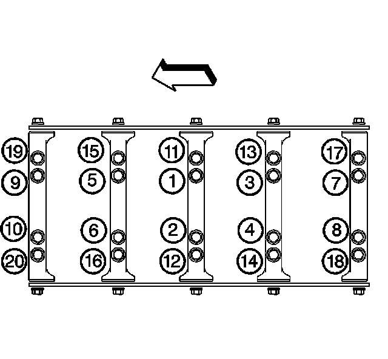

66. Thread Repair
Thread Repair
Tools Required
^ J 42385-100 Head/Main Bolt Thread Repair Kit
^ J 42385-200 Common Thread Repair Kit
^ J 42385-300 Fixtures and Hardware Kit
General Thread Repair
The thread repair process involves a solid, thin walled, self-locking, carbon steel, bushing type insert (1). During the bushing installation process, the driver tool expands the bottom external threads of the insert into the base material (2). This action mechanically locks the insert in place. Also, when installed to the proper depth, the flange of the insert will be seated against the counterbore of the repaired hole.
Caution: Refer to Safety Glasses Caution.
Important:
^ The use of a cutting type fluid GM P/N 1052864 (Canadian P/N 992881), WD 40(R), or equivalent, is recommended when performing the drilling, counterboring, and tapping procedures.
^ Driver oil MUST be used on the installer driver tool.
^ The tool kits are designed for use with either a suitable tap wrench or drill motor.
Drill out the threads of the damaged hole (1).
^ M6 inserts require a minimum drill depth of 15 mm (0.59 in).
^ M8 inserts require a minimum drill depth of 20 mm (0.79 in).
^ M10 inserts require a minimum drill depth of 23.5 mm (0.93 in).
1. Using compressed air, clean out any chips.
2. Counterbore the hole to the full depth permitted by the tool (1).
3. Using compressed air, clean out any chips.
4. Using a tap wrench (2), tap the threads of the drilled hole.
^ M6 inserts require a minimum tap depth of 15 mm (0.59 in).
^ M8 inserts require a minimum tap depth of 20 mm (0.79 in).
^ M10 inserts require a minimum tap depth of 23.5 mm (0.93 in).
5. Using compressed air, clean out any chips.
6. Spray cleaner GM P/N 12346139, GM P/N 12377981 (Canadian P/N 10953463), or equivalent, into the hole.
7. Using compressed air, clean any cutting oil and chips out of the hole.
Important: Do not allow oil or other foreign material to contact the outside diameter (OD) of the insert.
8. Lubricate the threads of the installer tool (2) with the driver oil (1).
9. Install the insert (2) onto the driver tool (1).
10. Apply threadlock LOCTITE(TM) 277, J 42385-109 (1), or equivalent, to the insert OD threads (2).
11. Install the insert (2) into the hole.
Install the insert until the flange of the insert contacts the counterbored surface. Continue to rotate the installer tool (1) through the insert.
The installer tool will tighten up before screwing completely through the insert. This is acceptable. You are forming the bottom threads of the insert and mechanically locking the insert to the base material threads.
12. Inspect the insert for proper installation into the hole.
A properly installed insert (1) will be either flush or slightly below flush with the surface of the base material (2).
Cylinder Head Bolt Hole Thread Repair
Cylinder Head Bolt Hole Thread Repair:
1. The cylinder head bolt hole thread repair kit consists of the following items:
^ The drill (1)
^ The tap (2)
^ The installer (3)
^ The sleeve (4)
^ The alignment pin (5)
^ The bushing (6)
^ The bolts (7)
^ The fixture plate (8)
Caution: Refer to Safety Glasses Caution.
Important:
^ The use of a cutting type fluid GM P/N 1052864 (Canadian P/N 992881), WD 40(R), or equivalent, is recommended when performing the drilling and tapping procedures.
^ Driver oil MUST be used on the installer driver tool.
^ The tool kits are designed for use with either a suitable tap wrench or drill motor.
Install the fixture plate (3), bolts (1), and bushing (2) onto the engine block deck.
Position the fixture plate and bushing over the hole that is to be repaired (4).
2. Position the alignment pin (1) through the bushing and into the hole.
3. With the alignment pin in the desired hole, tighten the fixture retaining bolts (2).
4. Remove the alignment pin from the hole.
5. Install the sleeve (2) onto the drill (1).
Important: During the reaming process, it is necessary to repeatedly remove the drill and clean the chips from the hole.
6. Drill out the threads of the damaged hole.
Drill the hole until the stop collar of the drill bit or the sleeve contacts the bushing.
7. Using compressed air, clean out any chips.
8. Using a tap wrench, tap the threads of the drilled hole.
9. In order to tap the new threads to the proper depth, rotate the tap into the hole until the mark (1) on the tap aligns with the top of the drill bushing (3).
10. Remove the fixture plate (2), bushing (3), and bolts.
11. Using compressed air, clean out any chips.
12. Spray cleaner GM P/N 12346139, GM P/N 12377981 (Canadian P/N 10953463), or equivalent, into the hole.
13. Using compressed air, clean any cutting oil and chips out of the hole.
Important: Do not allow oil or foreign material to contact the OD of the insert.
14. Lubricate the threads of the installer tool (2) with the driver oil (1).
15. Install the insert (2) onto the driver tool (1).
16. Apply threadlock LOCTITE(TM) 277, J 42385-109 (1), or equivalent, to the insert OD threads (2).
17. Install the insert and driver (1) into the hole.
Rotate the driver tool until the mark on the tool aligns with the deck surface of the engine block.
The installer tool will tighten up before screwing completely through the insert. This is acceptable. You are forming the bottom threads of the insert and mechanically locking the insert to the base material threads.
Main Cap Bolt Hole Thread Repair
1. The main cap bolt hole thread repair kit consists of the following items:
^ The drill (1)
^ The tap (2)
^ The installer (3)
^ The fixture plate (4)
^ The long bolts (5)
^ The short bolts (6)
^ The alignment pin (7)
^ The bushing (8)
2. Install the fixture plate, bolt, and bushing onto the engine block.
Position the fixture plate and bushing over the hole that is to be repaired.
3. Position the alignment pin in the desired hole and tighten the fixture retaining bolts.

4. Drill out the damaged hole.
The outer bolt hole locations 11-20 have the shallower counterbores. Use sleeve J 42385-316 with the drill.
Drill until the stop collar of the drill bit or the sleeve contacts the bushing.
5. Using compressed air, clean out any chips.
6. Using a tap wrench, tap the threads of the drilled hole.
In order to tap the new threads to the proper depth, rotate the tap into the hole until the mark on the tap aligns with the top of the bushing.
For the deeper main cap holes 1-10, rotate the tap until the upper mark (4) on the tap aligns with the top of the bushing (3).
For the shallower main cap holes 11-20, rotate the tap until the lower mark (1) on the tap aligns with top of the bushing (3).
7. Using compressed air, clean out any chips.
8. Spray cleaner GM P/N 12346139 (Canadian P/N 10953463), or equivalent, into the hole.
9. Using compressed air, clean any cutting oil and chips out of the hole.
Important: Do not allow oil or foreign material to contact the OD of the insert.
10. Lubricate the threads of the installer tool (2) with the driver oil (1).
11. Install the insert (2) onto the driver tool (1).
12. Apply threadlock LOCTITE(TM) 277, J 42385-109 (1), or equivalent, to the insert OD threads (2).
Important: The fixture plate and bushing remains installed onto the engine block during the insert installation procedure.
13. Install the insert and driver (1) through the fixture plate and bushing and into the hole.
Rotate the driver tool until the mark on the tool (3) aligns with the top of the bushing (2).
The installer tool will tighten up before screwing completely through the insert. This is acceptable. You are forming the bottom threads of the insert and mechanically locking the insert to the base material threads.